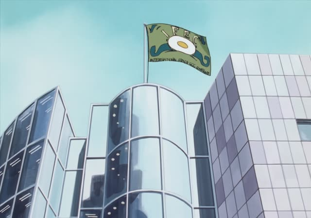
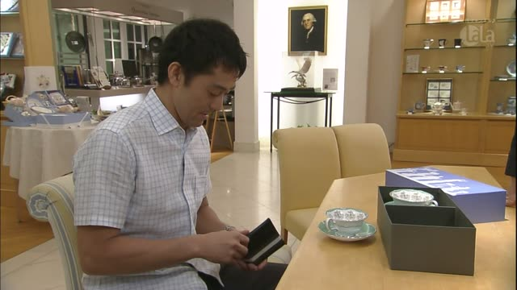
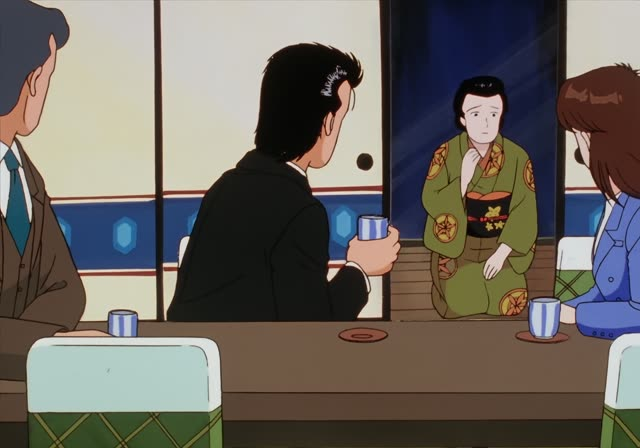

ございます
Shirokuma Cafe · Episode 29
こちらでございます。
"Here it is."
ございます is the very polite ある: あります → ございます. でございます is the very polite です: こちらです → こちらでございます.
On this card, Panda shows off his book, playing a polite shop clerk. You hear it in shops, hotels and announcements.
It's also inside set phrases: ありがとうございます, おはようございます, 申し訳ございません.

Oishinbo · Episode 47
海の幸の前菜でございます。
"This is a seafood appetizer."
On this card, Tomii presents a dish to the guests like a fancy waiter. でございます = very polite です.
Quick Examples
At a hotel front desk.
お部屋は３階でございます。
"Your room is on the third floor."
PoliteA shop clerk.
こちらに赤いのもございます。
"We also have red ones here."
ございます = あります.
PoliteA department store announcement.
トイレは地下１階にございます。
"The restrooms are on the first basement floor."
PoliteApologizing to a customer.
大変申し訳ございません。
"We are terribly sorry."
The negative: ございません.
PoliteWith and without
トイレはあちらです。
"The toilet is over there." Polite.
トイレはあちらでございます。
"The restroom is over there." Very polite.
Examples from Media
Kekkon Dekinai Otoko · Episode 3
熱はないようでございますね。
"It seems you don't have a fever."

Kekkon Dekinai Otoko · Episode 9
２万1000円でございます。
"That's 21,000 yen."
Vinland Saga · Episode 16
時間的余裕もございません。
"We don't have time to spare either."
ございません = ありません.
Vinland Saga · Episode 18
失って識ることがございます。
"There are things you only learn by losing them."
Samurai Champloo · Episode 15
いやはや、いい子ばかりで、外れがございません。
"Oh, they're all good girls, not a dud among them."
Aggretsuko · Season 1, Episode 7
トン部長、いい飲みっぷりでございますね～。
"Director Ton, what a fine drinker you are!"
Flattering the boss.
The Cat Returns
猫の王の中の王！猫王様にございます。
"King of kings of cats! Here is His Majesty."
にございます: an old, grand form.

Oishinbo · Episode 12
申し訳ございません。
"I'm terribly sorry."